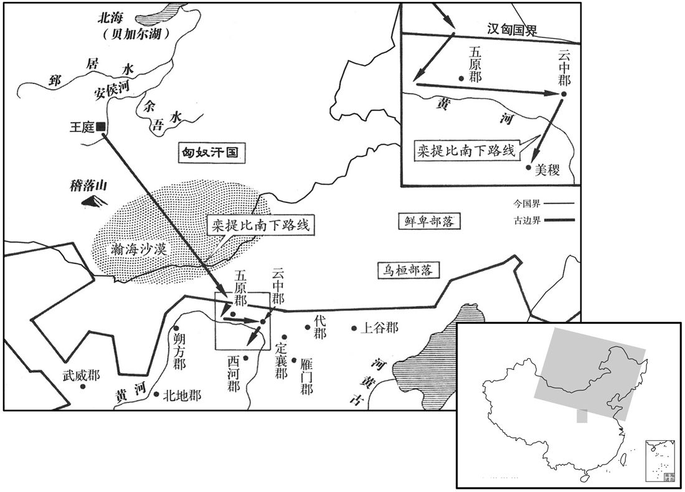

公元48年资治通鉴：本年记事、原文与白话对照
按原书编年位置阅读；追叙和史论不等于本年发生的事件。白话采用所据译本，缺译不以生成译文补齐。
卷44 · 本年记事
公元48年 · 汉世祖光武皇帝建武二十四年
二十四年〔（戊申、四八）〕
本年事件索引（现代整理）

本年形势与背景参考图
春，正月，乙亥，赦天下。
春季，正月乙亥（十九日），大赦天下。
匈奴八部大人共议立日逐王比为呼韩邪单于，款五原塞，愿永为藩蔽，扞御北虏。事下公卿，〔下，遐稼翻。〕议者皆以为「天下初定，中国空虚，夷狄情伪难知，不可许。」五官中郎将取国〔五官中郎将，掌五官郎。杜佑曰：汉制，三署郎，年五十以上属五官，其次分属左、右署。〕独以为「宜如孝宣故事，受之，〔事见二十七卷宣帝甘露、黄龙间。〕令东扞鲜卑，北拒匈奴，率厉四夷，完复边郡。」〔时边郡皆创残，有南匈奴为扞蔽，则可以完复矣。〕帝从之。
匈奴八大部落首领共同议定，拥立日逐王比为呼韩邪单于，派使者前往五原塞，表示愿永远做汉王朝的藩属屏障，抵御北方敌人。光武帝将此事交付公卿商议。大家都认为：“天下方才安定，中原空虚，而夷狄意图真假难辨，不可应许。”唯独五官中郎将耿国认为：“应当依照孝宣皇帝的先例，接受归附，命他们在东面抵御鲜卑，在北面抗拒匈奴，做四方蛮夷的表率，修复沿边诸郡。”光武帝听从了耿国的意见。
秋七月，武陵蛮寇临沅；〔贤曰：临沅，县名，属武陵郡，故城在今郎州武陵县。〕遣谒者李嵩、中山太守马成讨之，不克。马援请行，帝愍其老，未许，援曰：「臣尚能被甲上马。」〔被，皮义翻。〕帝令试之。援据鞍顾眄，以示可用，帝笑曰：「矍铄哉是翁！」〔贤曰：矍铄，勇貌也。〕遂遣援率中郎将马武、耿舒等将四万余人征五溪。〔郦道元注水经云：武陵有五溪，谓雄溪、横溪、西溪、潕溪、辰溪，悉是蛮夷所居，故谓五溪，皆盘瓠之子孙也。土俗「雄」作「熊」，「樠」作「朗」，「潕」作「武」。贤曰：五溪在今辰州界。〕援谓友人杜愔曰：「吾受厚恩，年迫日索，〔索，尽也。愔，于今翻。索，昔各翻。〕常恐不得死国事；今获所愿，甘心瞑目，但畏长者家儿或在左右，或与从事，殊难得谓，介介独恶是耳！」〔贤曰：长者家儿，谓权要子弟等。介介，犹耿耿也。余谓调，和也。援固已虑耿舒之难与共事，梁松、窦固之迩言矣。恶，乌路翻。〕
秋季，七月，武陵蛮人攻打临沅。东汉朝廷派谒者李嵩、中山太守马成讨伐，未能取胜。马援请求出征，光武帝怜他年迈，不肯应允。马援说：“我还能够身穿盔甲，上马驰骋。”光武帝命他一试身手。马援跨在鞍上，转身回视，以示仍可征战。光武帝笑道：“好一位精神矍铄的老翁啊！”于是派马援带领中郎将马武、耿舒等率四万余众进军五溪。马援对友人杜说：“我受皇恩深重。但年事已高，去日无多，总是担心不能为国而死。今日得遂所愿，我心甘情愿，死也瞑目。只是顾虑那些权贵子弟，他们或者近在左右，或者随从办事，很难调动，我唯独有此心病！”
冬，十月，匈奴日逐王比自立为南单于，遣使诣阙奉藩称臣。上以问朗陵候臧宫。〔贤曰：朗陵，县名，属汝南郡，故城在今豫州朗山县西南。〕宫曰：「匈奴饥疫分争，臣愿得五千骑以立功。」帝笑曰：「常胜之家，难与虑敌，吾方自思之。」
冬季，十月，匈奴日逐王比自立为南单于，派使节到汉廷，愿做藩国，自称臣属。光武帝询问朗陵侯臧宫的意见。臧宫说：“匈奴发生了饥荒瘟疫和分裂争斗，我愿得到五千骑兵去 立战功。”光武帝笑道：“面对常胜将军，难以商议敌情。我要自己考虑此事。”